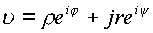
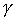
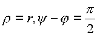
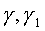

|
В. И. ЕЛИСЕЕВ ВВЕДЕНИЕ В МЕТОДЫ ТЕОРИИ
ФУНКЦИЙ ПРОСТРАНСТВЕННОГО КОМПЛЕКСНОГО ПЕРЕМЕННОГО |
|
1.2.2.H. Функция аргумент n
Исследуем поведение элемента пространства Y, представив его в сферических координатах
Если имеем
, то переходя к сферическим координатам получим| ,где , , . |
(1.40.) |
Точка
Функцию
можно рассматривать как функцию двух комплексов,
В этом случае функции
гдеКомплекс
Аргумент
Выведем формулу приращения комплексного аргумента на кривой
. Определим дифференцеалытак, что будем иметь
, а с учетом тригонометрических функций получимРассмотрим интеграл
Интеграл определяет разность значений аргумента между конечной и начальными точками на кривой ..
В пространстве знаменатель подынтегральной функции имеет две особенности
: 1) , что равносильно точки с ,фиксирующей начало координат ;2) , раскрывая это соотношение между модулями комплексов и аргументами получим ,что соотношение выполняется при равенстве  .
Полученные соотношения определяют изолированную ось в пространстве .Таким образом , выбрасывая из рассмотрения начало координат необходимо учитывать изолированную ось делителей нуля как особенность в пространстве .Область Д за вычетом этих особенностей является односвязной областью и для каждой кривой
имеет место равенствогде
и выполняется равенствоТаким образом , если кривые
выходят из одной точки и приходят в одну точку ,оставаясьВ области определения,
то имеет место равенство .Кривые можно непрерывно деформировать в пространстве .В комплексном пространстве аргументыимеют комплексную периодичность , так что комплекс имеет вид
где к=0,1,2,….есть целое. Эта периодичность следует из закона извлечения квадратного корня из+1 в пространстве чисел и пространственной кривой
Рассмотрим комплексный аргумент
как комплексную функцию в плоскости , где для удобства введены обозначения Функция является аналитической функцией в расширенной плоскости z с выколотыми точками ,которые являются логарифмическими точками ветвления ..
Условия выделения изолированной оси или иначе говоря конуса делителей нуля выражаемые
 показывают,
что в пространстве имеется
логарифмическая ось ветвления. Произведем
выделение действительной и мнимой части
комплекса . Преобразуя Ln по
законам комплексной алгебры Z получим
показывают,
что в пространстве имеется
логарифмическая ось ветвления. Произведем
выделение действительной и мнимой части
комплекса . Преобразуя Ln по
законам комплексной алгебры Z получим
представляет сумму аргументов числителя и знаменателя
Комплексный аргумент
|
(1.41.) |
При обходе цилиндрической оси комплексный аргумент имеет приращение только по действительной части. Мнимая часть представляет однозначную логарифмическую функцию,
приращение которой дает нуль. В вершинах пространственной сферы при при любом r.и любом r имеем . Действительная часть в вершинах сферы равна
| (1.42.) |
Мини оглавление:
[0], [1.1.1, 1.1.2, 1.1.3, 1.1.4, 1.1.5, 1.1.6, 1.1.7, 1.1.8, 1.2, 1.2.1, 1.2.2, 1.2.2.a, 1.2.2.b, 1.2.2.c, 1.2.2.d, 1.2.2.e, 1.2.2.f, 1.2.2.g, 1.2.2.h, 1.2.3, 1.3.1, 1.3.2, 1.3.3, 1.3.4, 1.3.5, 1.3.6, 1.4.1, 1.4.2, 1.5, 1.6, 1.7.1, 1.7.2, 1.7.3.1, 1.7.3.2, 1.7.3.3, 1.7.4.1, 1.7.4.2, 1.8.1], [2.1, 2.2],[3.1, 3.2, 3.3, 3.4.1, 3.4.2, 3.4.3, 3.4.4, 3.4.5],[4.1, 4.2, 4.3, 4.4],[5.1, 5.1.Рис.52, 5.2, 5.3, 5.4, 5.4.Т1, 5.4.Т2, 5.4.Т3, 5.5.1, 5.5.2, 5.5.3, 5.5.4],[6.1.1, 6.1.2, 6.2.1, 6.2.2, 6.2.3, 6.2.4, 6.2.5, 6.3, 6.4.1, 6.4.2, 6.5.1, 6.5.2],[7.1, 7.2, 7.3, 7.4, 7.5, 7.6, 7.7.1, 7.7.2, 7.8.1, 7.8.2, 7.8.3, 7.9],[8.1, 8.2.1, 8.2.2, 8.3, 8.4, 8.5, 8.6, 8.6.T1, 8.7, 8.8.1, 8.8.2, 8.8.3, 8.9.1, 8.9.2, 8.9.3, 8.10, 8.10.T2, 8.10.T3],[9.1, 9.2, 9.3, Рис.88, 89, 90, 91, 92, 93, 94, 95, 96, 97, 98, 99, 100],[10.1, 10.2, 10.3, 10.4, 10.5, 10.6, 10.7, 10.8, 10.9, 10.10, 10.11, 10.12, 10.13, 10.14, 10.15.1, 10.15.2, 10.16.1, 10.16.2, 10.17, 10.18],[11]
Размещенный материал является электронной версией книги: © В.И.Елисеев, "Введение в методы теории функций пространственного комплексного переменного", изданной Центром научно-технического творчества молодежи Алгоритм. - М.:, НИАТ. - 1990. Шифр Д7-90/83308. в каталоге Государственной публичной научно-технической библиотеки. Сайт действует с 10 августа 1998.
E-mail: mathsru@gmail.com